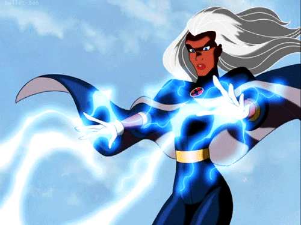
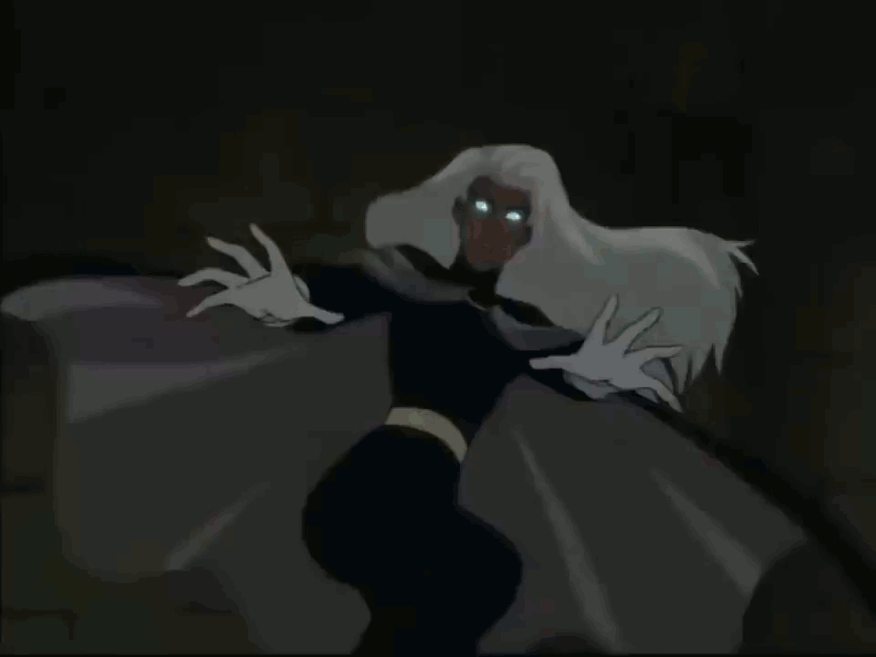
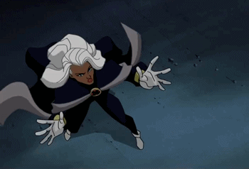
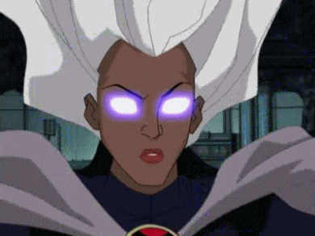
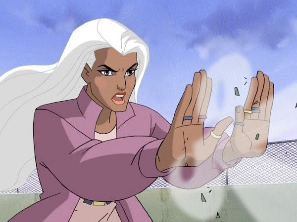
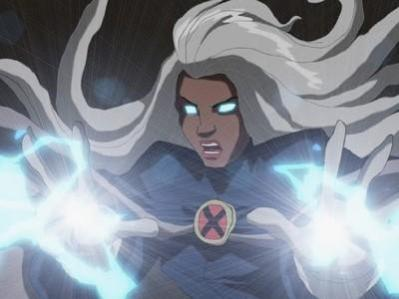

Tempestade
Em uma limusine próxima, Charles Xavier chegou a tempo e conseguiu limpar a mente de um policial que suspeitou que fosse mais do que um vazamento no tanque de propano. Satisfeito, Charles diz ao motorista que eles têm um trem para pegar. Na estação de metrô citada anteriormente, Ororo Munroe acompanha Xavier, onde planejava se encontrar com Kurt Wagner . Ororo perguntou a Xavier se alguma das pessoas que passavam era ele antes de Xavier dizer a ela que não era, voltando seus olhos para o verdadeiro Kurt, que está vestindo sobretudos.




Personalidade
Ororo é conhecida por sua personalidade calma e maneiras régias. Mas quando está com raiva, ela leva as coisas muito a sério. Ela foi até adorada como uma deusa por uma tribo africana , que acreditava que ela era um espírito elemental por causa de sua habilidade de convocar as chuvas.

Storm é um modelo para outros que desejam se juntar aos X-Men; ela é forte, confiante, inteligente, atenciosa, leal e corajosa. Esses atributos são úteis para ela como instrutora no Instituto Xavier e também na batalha. Ela serve como mentora para os jovens mutantes, orientando-os no uso de seus poderes.
Devido às suas poderosas habilidades mutantes, Storm deve manter suas emoções sob controle porque permitir que seus poderes funcionem livremente pode causar danos incalculáveis. Portanto, Ororo é exteriormente sereno.
Mas uma das poucas coisas que podem fazer Storm perder a calma é sua claustrofobia. Ela fará o que for preciso para sair de todos os espaços pequenos.

Home